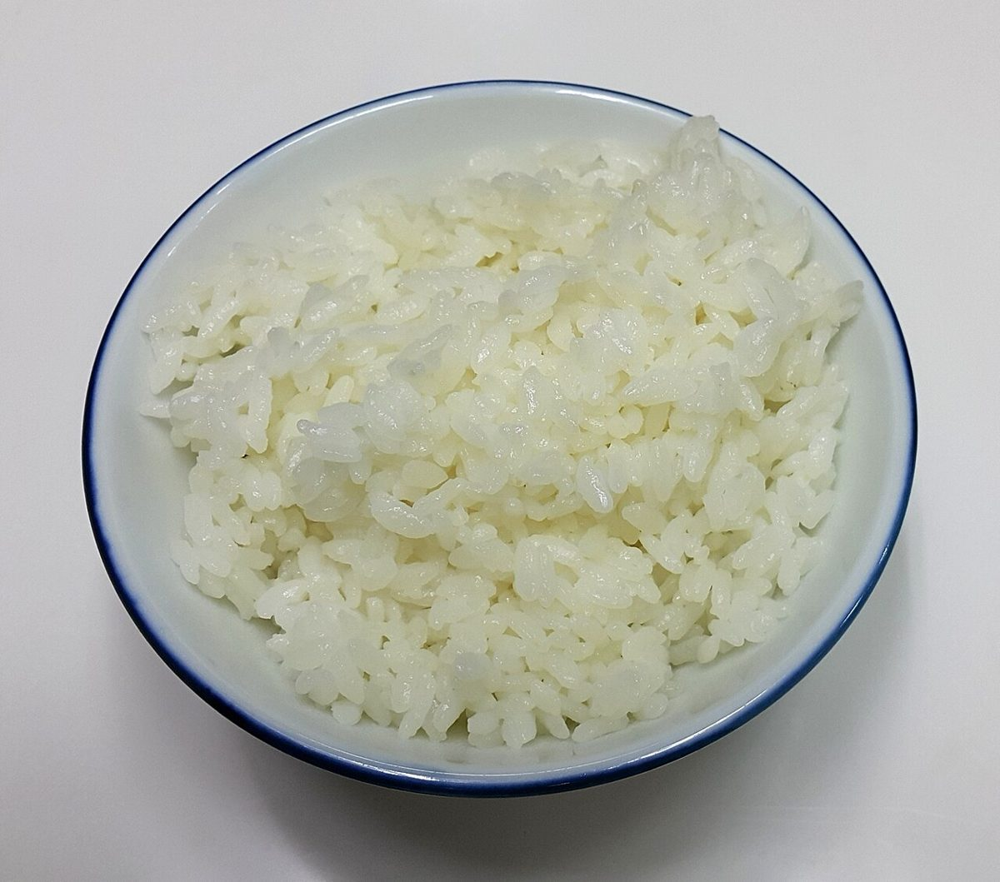
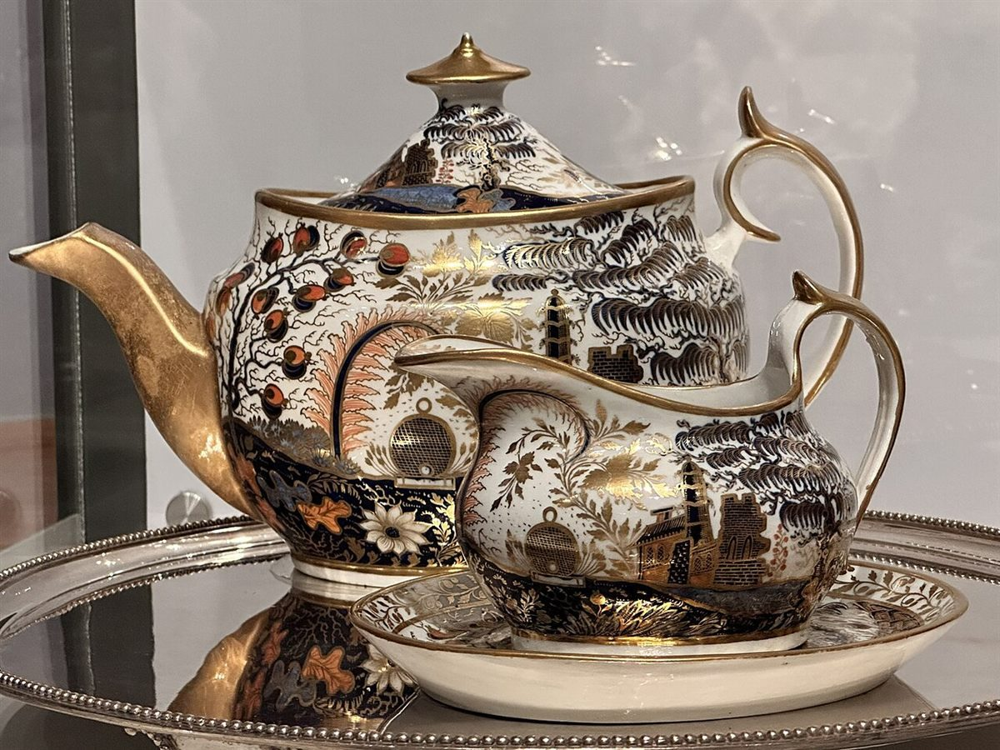

カフェ / 鹿児島県薩摩川内市
ごはんとおやつsyuO

制作側の連想
ふたつの語をつなぐ「と」
屋号は「ごはん」と「おやつ」を「と」でつないだ形をしています。制作側はこの「と」の字に目を留め、サイト全体を「ふたつのものを並べてつなぐ継ぎ目」の見た目にしました。ページの題名も「○○と△△」の形にそろえています。これは制作側の連想で、お店の理念・由来とは無関係です(屋号の「syuO」の意味・読み方も分かっていません)。
ふたつ並べてみる
継ぎ目の見本。
写真は国外・撮影地不明のフリー素材です。お店の料理・商品ではなく、色と形が引き立ち合う組み合わせとして並べた遊びです。
- と

撮影地不明のイメージ 
撮影地不明のイメージ 白 と 焼き色色と形だけの組み合わせ
- と

国外のイメージ(スウェーデン) 
国外のイメージ(米国) 無地 と 縞色と形だけの組み合わせ
- と

国外のイメージ(米国) 
撮影地不明のイメージ 金彩 と 透明色と形だけの組み合わせ
- と

撮影地不明のイメージ 
国外のイメージ(インド) 淡色 と 赤色と形だけの組み合わせ
ご案内
確認できているお店のこと
| 所在地 | 〒895-0072 鹿児島県薩摩川内市中郷2丁目8-34 |
|---|---|
| 電話 | なし |
| 営業時間 | 準備中 |
| 定休日 | 準備中 |
| ご予約 | 準備中 |
| 駐車場 | 準備中 |
| SNS | Instagram @gohan.to.oyatsu_syuo |